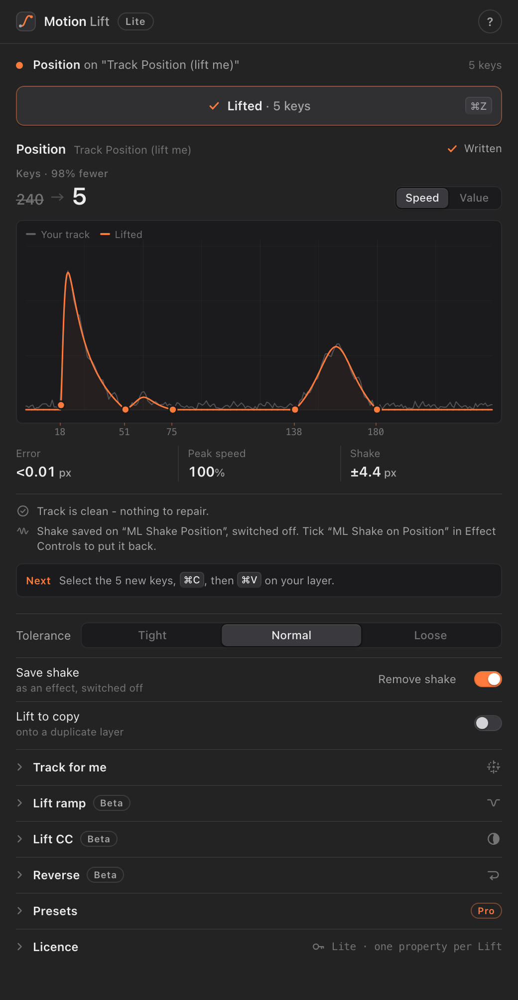

NewAfter Effects extension
Motion Lift Pro
Copy any move’s exact ease in one click.
- Lift every selected property at once
- Save eases as presets and apply them anywhere
- Reverse, the clip-end rewind Beta
- Apply for Lift ramp and Lift CC Beta
$3one-time · one computer
